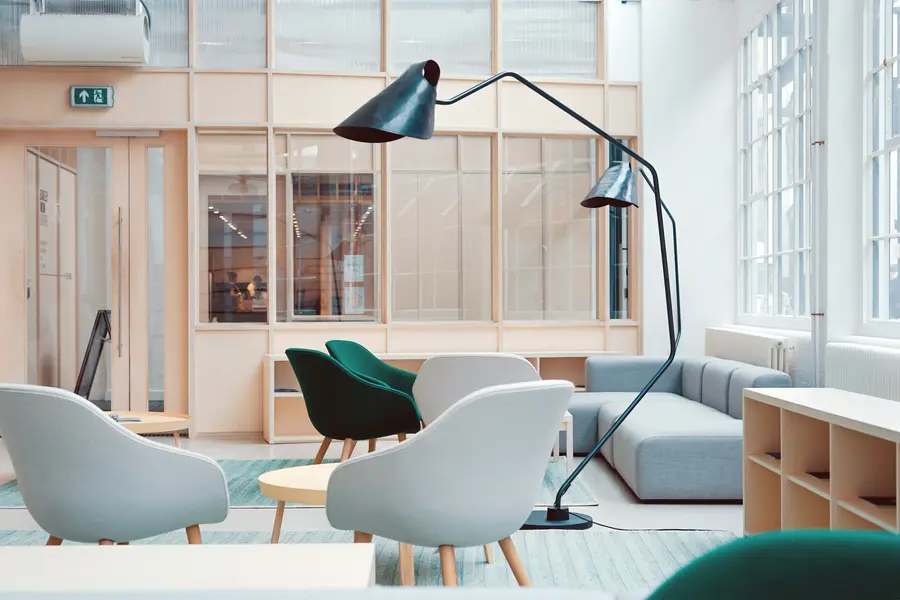
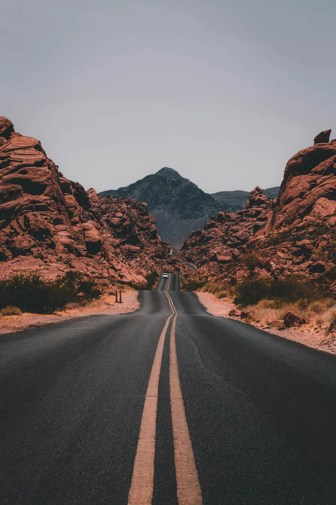

Hero imagery
Fourteen large-format frames for the website and the printed launch materials, shot at the dock edge and inside the roastery with the product held in real hands.
Commission · Brand campaign, Baltic Triangle · March 2026

Brand & commercial · Photography & Film · Liverpool
A coffee roastery opening its first café on the edge of the Baltic Triangle asked for imagery that felt like the docks rather than a stock-photo café. We spent four days between the roastery, the waterfront and the regulars who were already coming in before the doors officially opened.
01 / The brief
The roastery had a name, a palette and a good product, but every image in their launch deck could have come from any city. Their concern was specific: they wanted to avoid the polished, anonymous look that most coffee brands end up with.
We proposed shooting in three places that actually belong to the business: the roastery where the beans are done, the dock edge that gave the place its name, and the café itself with whoever walked in on the day.
02 / How we worked
Day one was the roastery: hands, steam, the drum roaster mid-batch, and the parts of the process nobody photographs until they are asked to. We shot on available light with one fixed lens so the frames stayed consistent and honest.
Days two and three moved outside to the dock edge at first light, which in March means a grey-to-gold transition in about twenty minutes. The fourth day was the café soft launch, with real customers rather than models.
03 / The campaign
The launch needed very different assets from a single production, so we planned the shot list around what each channel would actually use.
Fourteen large-format frames for the website and the printed launch materials, shot at the dock edge and inside the roastery with the product held in real hands.
Customers and staff photographed during the soft launch as they actually were, with written permission, no direction beyond where to stand for the light.
Shot on the same four days, ambient sound recorded on location, and edited to a simple arc: beans, water, street, cup. Delivered in landscape and vertical.
04 / The launch film
Shot across the same four days, with ambient sound recorded on location and edited to a simple arc: beans, water, street, cup. The landscape cut is below; a vertical version was delivered for social.
North Dock Coffee Roasters — March 20261 min 30 sec
05 / From the campaign
The final selection deliberately includes process images as prominently as lifestyle ones. Roasting is the part of the business with the most texture, and it became the visual thread that holds the campaign together.

06 / The result
North Dock opened with a full image library covering the website, the printed menus, the launch social run and the in-store screens, all shot to one visual rule so nothing looks assembled from different sources.
The campaign ran for the first three months of trading. The waterfront frames are now printed across the café wall, four metres wide, which is a good outcome for photographs taken at six in the morning in March.
Next project
Your brand. Your story.
Launching something, or refreshing how your brand looks?
Start a conversation